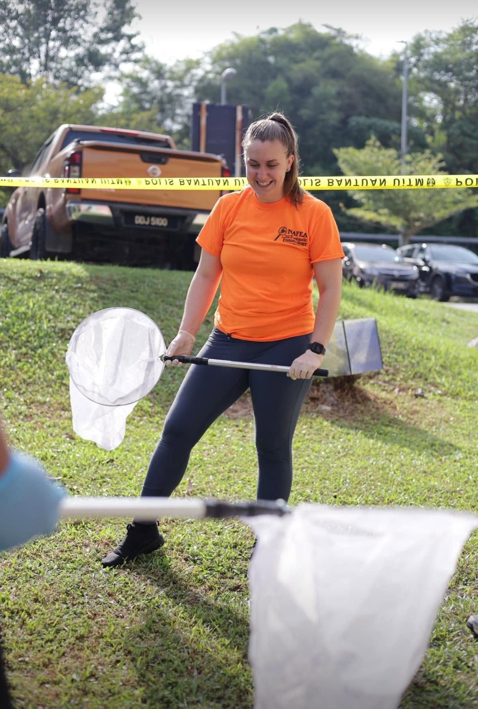
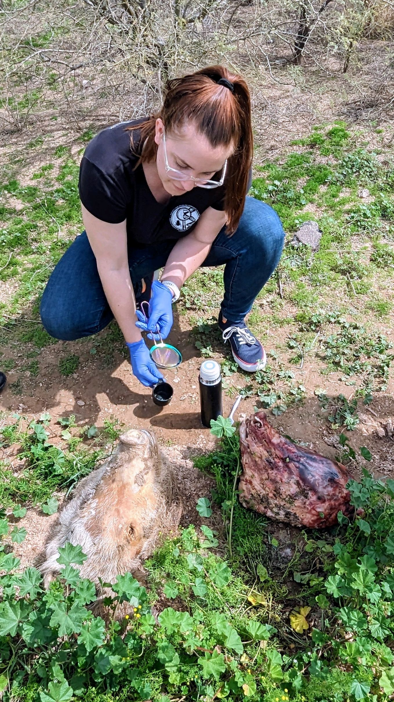

Courses, professional development, and continuing education in forensic science.
Continuing education and training for law enforcement, investigators, and forensic professionals.


Dr. Weidner is available for professional training sessions and guest lectures on forensic entomology for forensic professionals and her workshops are certified for CEUs through the IAI and the ABMDI. Contact her to discuss scheduling.
Contact Dr. WeidnerCommunicating forensic science to the public, students, and community organizations